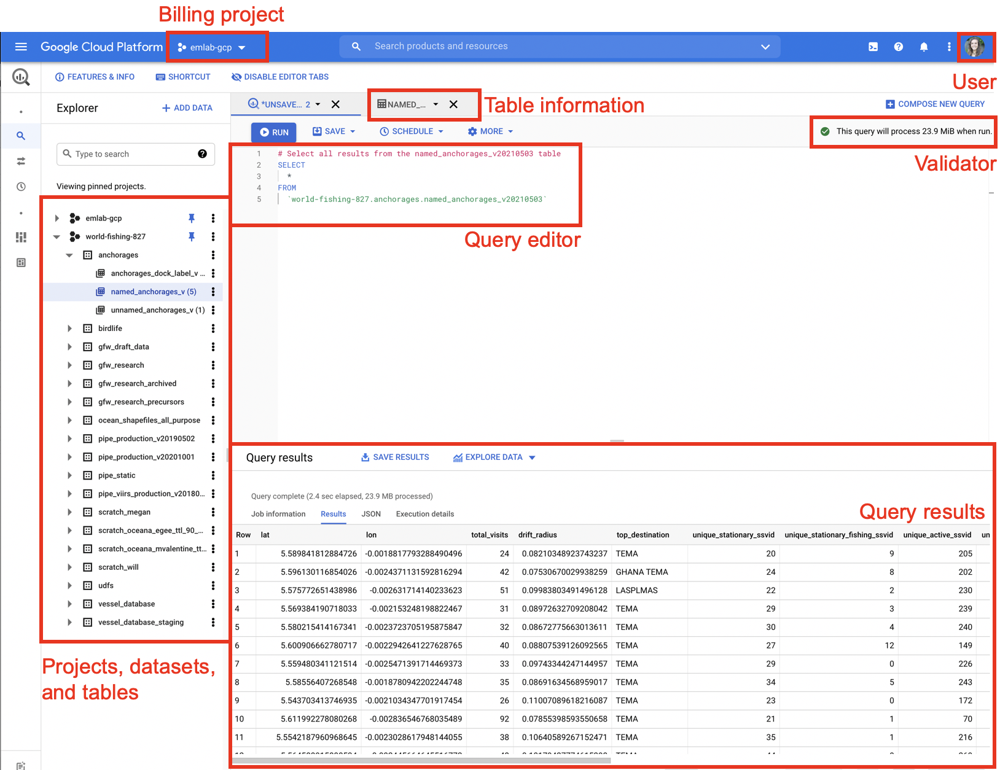

2.1 BigQuery Setup
BigQuery can be accessed in three ways: through the BigQuery console, the BigQuery command line interface, and through BigQuery APIs in Python or R. For more information on using BigQuery in R, refer to Section 4.1.
BigQuery is part of the Google Cloud Platform (GCP). Details of getting your machine set up with GCP products is covered in the emLab SOP Section 5.1. Once gcloud is installed and your credentials are authenticated you should be able to set emlab-gcp as your project which will link you to emLab’s billing account. If you have any problems joining or connecting to emlab-gcp, please get in touch and we will help set you up.
The BigQuery console provides a nice interface for writing and validating queries. The upper left corner of the BigQuery console displays the billing project code. For most emLab users, this should say emlab-gcp. The upper right corner shows the user, make sure you are logged in when running queries. Queries can be written in the query editor window and the validator will tell you how large the query is and will warn you if there are any syntax errors in the query. Once a query is run, the results will be displayed beneath the query editor window. Projects, datasets, and tables are displayed on the left hand side of the console. Selecting a table will bring up an additional tab displaying the table information.
